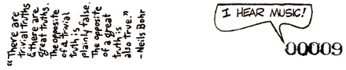

|
You have built for yourselves psychic suits of armor, and clad in them, your vision is restricted, your movements are clumsy and painful, your skin is bruised, and your spirit is broiled in the sun.
I am chaos. I am the substance from which your artists and scientists build rhythms. I am the spirit with which your children and clowns laugh in happy anarchy. I am chaos. I am alive, and I tell you that you are free.
During the next months they studied philosophies and theologies, and learned that Eris or Discordia was primarily feared by the ancients as being disruptive. Indeed, the very concept of chaos was still considered equivalent to strife and treated as a negative. "No wonder things are all screwed up," they concluded, "they have got it all backwards." They found that the principle of disorder was every much as significant as the principle of order.
With this in mind, they studied the strange yin-yang. During a meditation one afternoon, a voice came to them:
It is called the Sacred Chao. I appoint you Keepers of It. Therein you will find anything you like. Speak of Me as Discord, to show contrast to the pentagon. Tell constricted mankind that there are no rules, unless they choose to invent rules. Keep close the words of Syadasti: 'TIS AN ILL WIND THAT BLOWS NO MINDS. And remember that there is no tyranny in the State of Confusion. For further information, consult your pineal gland.

|